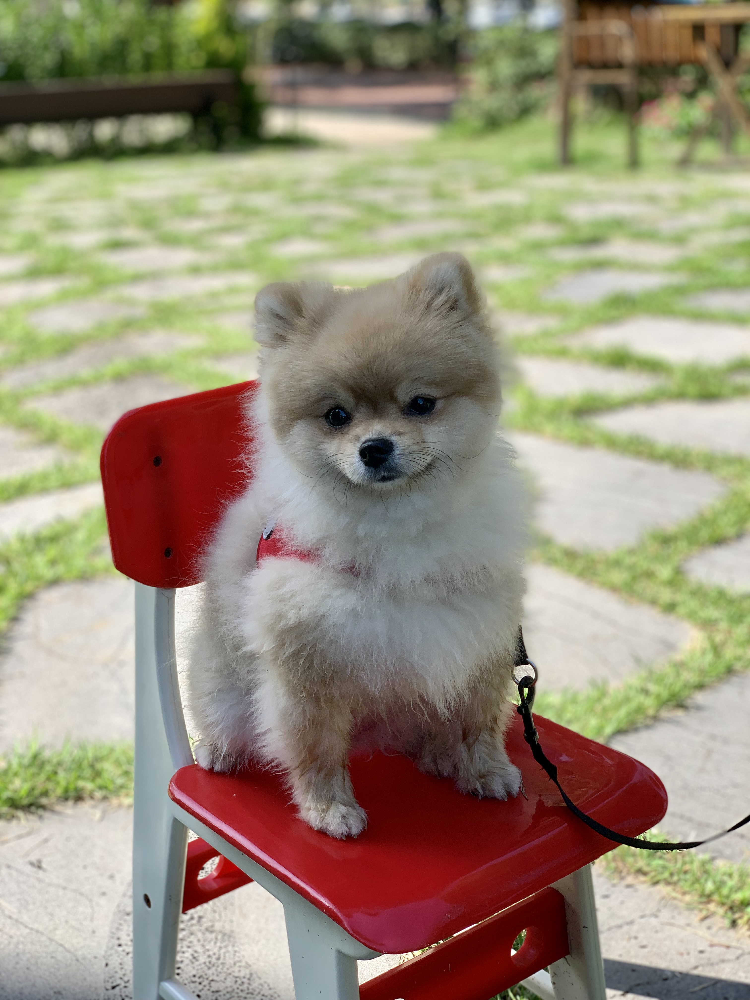

My Journey with Mocca
Let me introduce you to Mocca, a fluffy little Pomeranian who changed my life. When I first adopted Mocca, I had no experience with dogs. I was nervous, unsure, and honestly — a little overwhelmed. But from the first moment she curled up on my lap, I knew we had something special.
The First Year
The first few months were full of learning. Mocca had endless energy, chewed everything, and needed constant attention. We went through several obedience classes, and I learned to be patient, consistent, and calm.
One of the best pieces of advice I found was from the American Kennel Club's training tips. These helped me stay on track and gave Mocca a reliable routine.
The Bond We Built
Over time, Mocca became my best friend. Whether it was walks in the park, lazy Sundays, or just being there after a long day, she taught me the value of companionship and unconditional love. Dogs don't care if you're having a bad day — they just want to be there with you.
What I Learned
- Patience pays off: Training takes time — but it is worth it.
- Routine is key: Dogs thrive on knowing what to expect.
- Love deeply: A dog will give back ten times with love.
Want to know more about how dogs can improve mental health? Check this out: How Dogs Help Us Feel Better.
